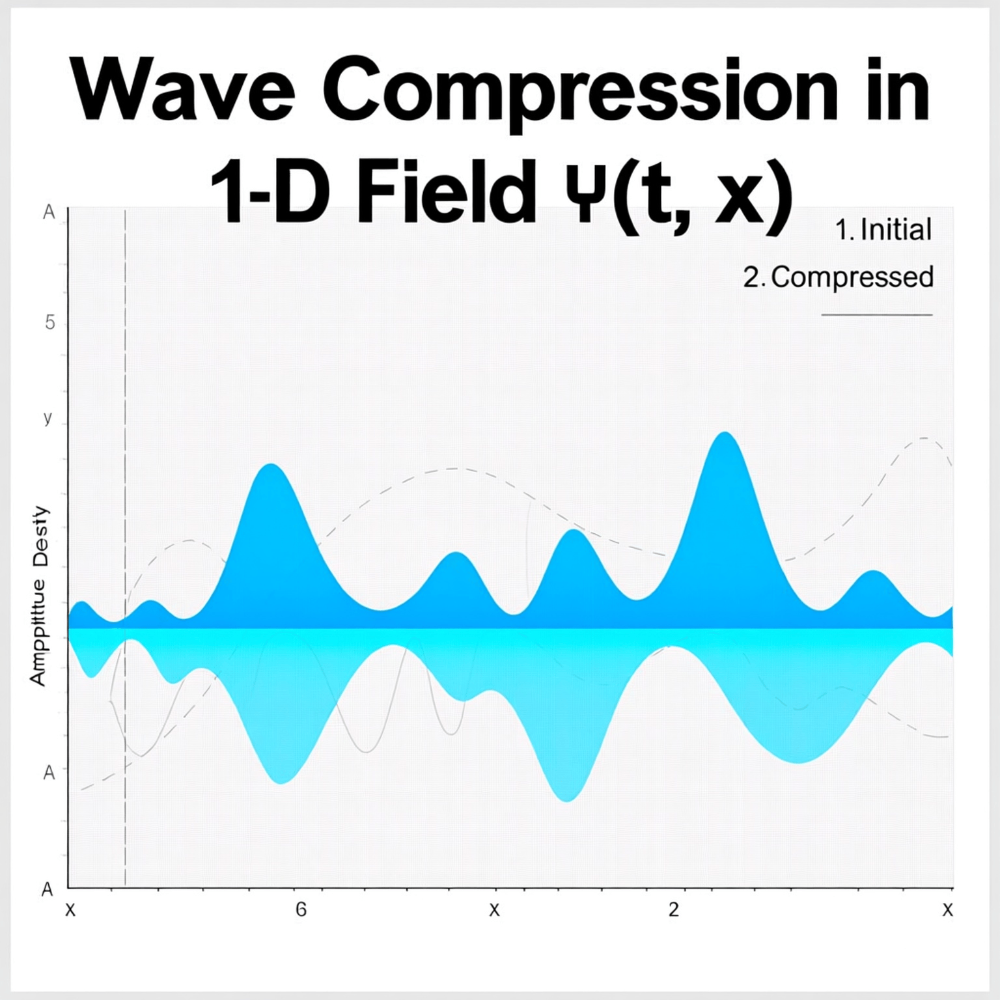
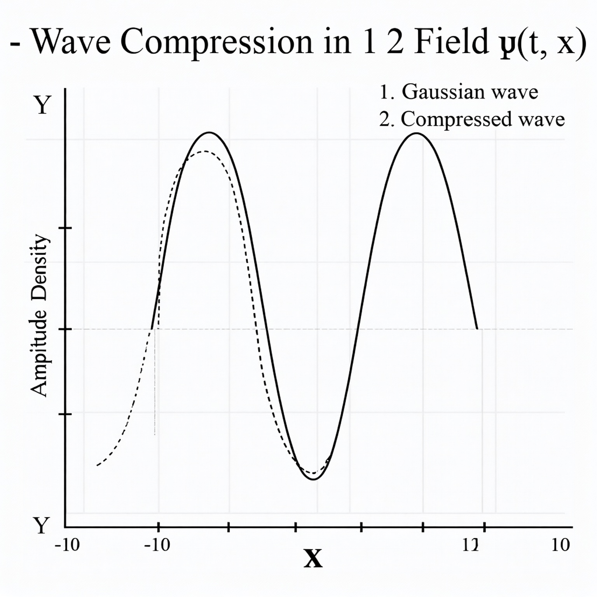

🌀 Wave Compression — Foundations of the Compressive Framework¶
Notebook 1 of 10
Establishing the fundamental wave compression dynamics that give rise to all emergent particle behavior in the Compressive Framework (CF).
1. Concept Overview¶
The Compressive Framework (CF) begins with the wavefunction ψ(t, x), which represents distributed presence — energy, probability, and informational amplitude.
Compression occurs when ψ(t, x) interacts with spatial curvature and internal feedback fields, gradually reducing its spread while amplifying local density.
This dynamic sets the foundation for particle formation and the coupling of graviton, chronon, and cognon modes.
2. Foundational Equation¶
The compressive wave equation can be written as a modified Schrödinger form:
where:
| Symbol | Meaning |
|---|---|
| \alpha | Nonlinear self-attraction (compression gain) |
| \beta | Diffusion-like resistance term |
| \psi(t,x) | Distributed wave amplitude |
| m | Effective inertial parameter |
| \hbar | Reduced Planck constant (scaling factor) |
This model balances nonlinear focusing with spatial diffusion, naturally producing compression thresholds that seed particle-like stability.
3. Visualization — 1D Wave Compression¶


⸻
- Interpretation
As ψ compresses, three key subfields begin to emerge: • Φ(t,x) → Graviton field (spatial curvature) • χ(t,x) → Chronon field (temporal coherence) • C(t,x) → Cognon field (informational density)
In subsequent notebooks, we’ll separately derive and visualize each of these, showing how they interact to create stable particle emergence and nonlocal coupling.
⸻
- Next Notebook
Next: Chronon Dynamics →
We’ll explore temporal coherence, where ψ’s internal phase synchronization gives rise to the chronon field χ(t,x) — the heartbeat of compressed temporal structure.